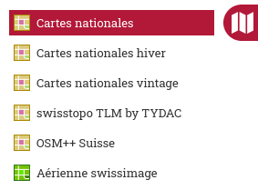
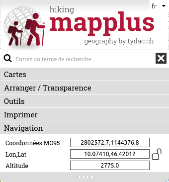
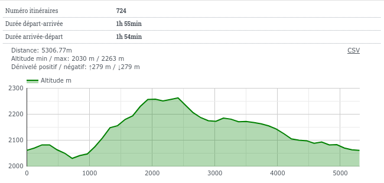
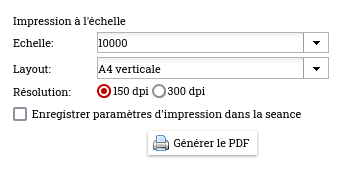
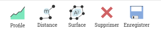
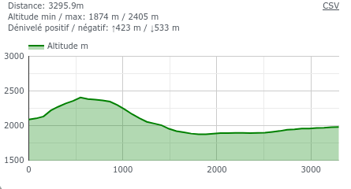
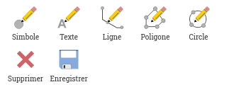

MAP+ Hike - Aide
Contenu
Cartes et fonctions
Outils
Navigation
Vous disposez des options suivantes pour naviguer sur la carte:

- Zoom in et zoom out Utilisation de la molette de la souris ou les touches +/-
- Déplacer la carte: Maintenez le bouton gauche de la souris enfoncé et faites glisse ou uttilisez les touches fléchées
- Fenètre: Appuyer sur la touche Shift et cliquer/glisser sur la carte
- Localisation (GPS)
- Afficher aperçu général, fonction "Maison"
Recherche
Vous pouvez rechercher pour::
- Commune
- Code postal / localité
- SuisseMobile: itinéraires et étapes
- Points d'intérêt comme hôtels, restaurants, cabannes etc.
- Noms locaux, lacs, montagnes etc. (swissnames by swisstopo, plus de 400'000 objets)
Exemples de techniques de recherche rapides et efficaces
Entrez le terme (ou une partie) que vous recherchez ou une combinaison de termes:
- Ville de Coire: "chur"
- Autour de lac de Saoseo: "saoseo" -> rifugio, lago, nom local, scima
- Bernina: "bernina" -> Ospizio, restaurants, itinéraires et étapes SuisseMobile ...
- Hôtel Sternen Muri: "ster mur"
- Cabanne Blüemlisalp: "blü berg"
Affichage et recherche de coordonnées

Cadenas ouvert: affichage dynamique des coordonnées de la position de la souris.

Cadenas fermé: affichage des coordonnées de la position de la souris en cliquant, permettant copier/coller des coordonnées.
Pour rechercher, entrez les coordonnées désirées séparés par une virgule ou espace, puis appuyez sur Entrée.
Cartes
Cartes de fond

Comme fond vous avez la choix:
- Cartes nationales swisstopo
- Cartes nationales hiver swisstopo
- Cartes nationales vintage swisstopo
- swisstopo TLM by TYDAC (TLM: modèle topographique du paysage)
- OSM++ Suisse: Cartographie sur base de OpenStreetMap
- Images aeriennes swissimage
Interrogation et export des données SuisseMobile

Cliquez sur la fonction "Base de données". Les données de SuisseMobile peuvent être filtrées, affichées et téléchargées:
En utilisant les fonctions de la table, les données peuvent être triées et filtrées à volonté, mais aussi en combinaison avec des sélections géographiques (rectangle, polygone). Les données sélectionnées peuvent être téléchargées sous différents formats: MS-Excel, JSON, XML, CSV, Text, etc.
Pour des instructions détaillées, veuillez consulter les pages d'aide distinctes
Autre fonctions

Autre fonctions sont:
- Enlever toutes les couches
- Google StreetView:
- Navigation dans Street View: la carte est ajustée en conséquence (position et la direction).
- Alternativement, vous pouvez déplacer l'objet Street View sur la carte. Le système cherche la prise la plus proche.
- Vue 3D de la zone
Cartes

Choix des couches qui peuvent être ajoutées à la carte de fond, thèmes disponibles:
- Sentiers et infrastructure
- SuisseMobile
- SuisseMobile et swisstopo: sports d'hiver
- Gastronomie e Hébergement
- Transport
- Nature et environnement
- Information supplementaire utile
Demande d'information sur l'objet
toutes les couches avec un "i" dans l'icône peuvent être interrogées. Pour interroger un ou plusieurs thèmes, cliquez sur l'objet désiré. Des profils sont générés automatiquement pour tous les sentiers de randonnée et les itinéraires et étapes de SuisseMobile. Ces informations peuvent également être traitées au format PDF. Les objets SuisseMobile contiennent également des liens vers des informations sur SuisseMobile.
Example:

Outils
Les outils suivants sont disponibles (voir ci-dessous pour plus de détails):
- Mesurer et profils
- Dessiner
Imprimer
 Impression PDF à l'échelle
Impression PDF à l'échelle
La boîte de dialogue suivante s'affiche. Choisissez échelle, mise en page, résolution:

IMPORTANT: Pour imprimer un PDF à l'échelle avec Adobe Acrobat Reader les options de "copies et ajustements" doivent être définies comme suit (similaire avec autres outils d'impression PDF). Example:

Mesurer

Profil

Mesure de la distance avec génération du profil
Cliquez sur le point de départ souhaité puis enregistrez n'importe quel nombre de points intermédiaires. Double-cliquez pour terminer. Une fois la mesure terminée, vous pouvez déplacer des points ou en ajouter de nouveaux points intermédiaires. Pour mesurer une nouvelle profile, répétez simplement la procédure. Pour sortir de la fonction, sélectionnez à nouveau la fonction. - on peux:
- Déplacez le souris sur le profil. L'emplacement est affiché sur la carte
- Cliquez sur le profil pour l'agrandir, par exemple pour imprimer
Vous pouvez ajouter et déplacer des points de la polyligne de distance, le profil est mis à jour. Pour terminer la fonction, cliquez à nouveau sur l'icône, choisissez une autre fonction ou passez à cartes ou recherchez.

Distance / Superfice
 Distance
Distance
Mesurer une distance: Cliquez des points dans la carte; pour terminer la mesure de la distance, cliquez deux fois.
 Superfice
Superfice
Mesurer une surface: Cliquez des points dans la carte; pour terminer la mesure de la surface, cliquez deux fois.
Effacer: cliquez sur la fonction de suppression.
Enregistrer comme signet: la mesure peut être enregistrée comme signet. Si vous enregistrez une mesure, une balise est ajoutée à l'URL. Vous pouvez enregistrer l'URL comme signet ou copier l'URL et, par exemple, l'envoyer à quelqu'un. En plus de la mesure, tous les paramètres de la carte sont sauvegardés (vous pouvez revenir exactement où vous étiez).
Dessin

 Symboles
Symboles
Sélectionner la fonction. Un choix de symboles est affiché, choisissez le symbole souhaité. Cliquez sur la carte pour le placer. Répétez l'opération pour ajouter d'autres points. Pour finir, cliquez de nouveau sur la fonction. Les symboles peuvent être déplacés ou modifiés: cliquez sur le symbole et le déplacer en le faisant glisser avec la souris. Modifiez-le en choisissant un autre dans la liste.
Effacer:
- Un symbole: cliquez sur le symbole et choisissez le bouton poubell
- Tous: cliquez sur la fonction de suppression
 Textes
Textes
Sélectionner la fonction. Un choix de propriétés de texte apparaît, cliquez dessus et tapez le texte souhaité. Cliquez sur "OK" et après sur la carte pour la placer. Répétez l'opération pour ajouter d'autres textes. Pour finir, cliquez de nouveau sur la fonction. Le texte peut être déplacé ou modifié: cliquez sur le texte et le déplacer en le faisant glisser avec la souris. Changer le texte en utilisant le dialogue.
Effacer:
- Un symbole: cliquez sur le symbole et choisissez le bouton poubell
- Tous: cliquez sur la fonction de suppression
 Lignes
Lignes
Sélectionner la fonction. Le choix des propriétés de la ligne est affichée. Cliquez des points dans la carte, terminez par double-clique. Répétez l'opération pour ajouter d'autres lignes. Pour finir, cliquez de nouveau sur la fonction. Les lignes peuvent être déplacées ou modifiées: cliquez sur la ligne et le déplacer en le faisant glisser avec la souris ou en changeant ou en ajoutantdes points intermédiaires. Changer les propriétés en utilisant le dialogue.
Effacer:
- Un symbole: cliquez sur le symbole et choisissez le bouton poubell
- Tous: cliquez sur la fonction de suppression

 Surfaces / Circles
Surfaces / Circles
Sélectionner la fonction. Le choix des propriétés de la ligne est affichée. Cliquez des points dans la carte, terminer par double-clique. Répétez l'opération pour ajouter d'autres surfaces. Pour finir, cliquez de nouveau sur la fonction. Les surfaces peuvent être déplacées ou modifiées: cliquez sur la surface et la déplacer en le faisant glisser avec la souris ou en changeant ou en ajoutant des points intermédiaires. Changer les propriétés en utilisant le dialogue..
Effacer:
- Un symbole: cliquez sur le symbole et choisissez le bouton poubell
- Tous: cliquez sur la fonction de suppression
Enregistrer comme signet: le dessin peut être enregistrée comme signet. Si vous enregistrez un dessin, une balise est ajoutée à l'URL. Vous pouvez enregistrer l'URL comme signet ou copier l'URL et, par exemple, l'envoyer à quelqu'un. En plus de la mesure, tous les paramètres de la carte sont sauvegardés (vous pouvez revenir exactement où vous étiez).
Version mobile
L'application est disponible dans une version mobile adaptée pour les téléphones mobiles avec des fonctionnalités réduites. Disponible sont les fonctions suivantes:
- Choix de la carte de fonds
- hoix des couches qui peuvent être ajoutés
- Localisation GPS
- Enlever toutes les couches
- Afficher aperçu général de la carte
- Interrogation objets
- Recherche